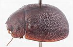
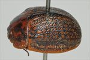
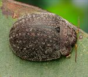
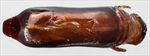
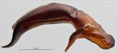
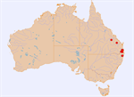

Click on images to enlarge
{kind=link}

Male, Rathdowney, S.E. Queensland
{kind=link}

Female, Rathdowney, S.E. Queensland
{kind=link}

Female, Gurranang, N.E. New South Wales
{kind=link}

Aedeagus, dorsal view (Rathdowney, S.E. Queensland)
{kind=link}

Aedeagus, lateral view (Rathdowney, S.E. Queensland)
{kind=link}

Name
Trachymela sp. Ta58
Reference specimen
1999-0138, Rathdowney, SE Queensland.
Adult Description
Length: ♂ (8.2)9.4–9.9 mm (n=8), ♀ 9.3–10.7(11.4) mm (n=9).
Colouration:
- Head: generally uniformly dark brown, sometimes with black along lateral segments of fronto-clypeal suture, black-tipped mandibles; antennomeres 1–4 light brown, 5–11 similar or very slightly darker, sometimes with distal portions of segments even darker.
- Pronotum: dark brown, concolorous with head, with an irregularly shaped darker brown (rarely black) macula on either side that extends obliquely from near anterior margin between centre and inside edge of eye towards posterior margin, almost reaching it opposite humeral callus, foveal elevation dark brown.
- Scutellum: dark brown, similar or darker than adjacent region of pronotum, often broadly bordered in darker brown, rarely completely black.
- Elytra: dark brown, concolorous with pronotum, with punctures darker brown, usually producing a finely patterned surface on disc of these two shades, sometimes only the rows of verrucae are lighter-coloured which then results in a dark disc with prominent rows of small lighter-coloured patches, a dark brown band usually borders suture from scutellum to summit, the marginal area usually appears lighter-coloured than disc due to the greater area of interstices and verrucae, humeral callus concolorous with surrounds.
- Venter & Legs: head and thoracic and abdominal ventrites uniformly dark brown, legs sometimes a slightly lighter shade, epipleura brown.
- Cuticular Wax: a sparse and even to slightly uneven coating of grey, pale brown or sometimes pale orange-brown; spots of slightly denser concentrations along VR3, VR5 and VR7 over the verrucae may produce the appearance of several faint dotted longitudinal lines over the elytral disc.
Morphology:
- Head: punctures quite large (pd ≈ 2–2.5× ef) and slightly unevenly to quite unevenly and moderately densely distributed, sometimes partially obliterated by rugose interstices that often are most prominent as longitudinal ridges; antennae moderately long (AL/BL: ♂ 38–42%, ♀ 37–39%), filiform.
- Pronotum: evenly curved transversely over discal region, lateral margins slightly explanate, sometimes very slightly, with foveal depression absent though always sometimes with a slight rounded elevation behind centre of eye, puncturation very deeply impressed, evenly and quite densely distributed in discal area with a mix of puncture sizes present, the larger fractionally larger than those on head, becoming much coarser at lateral margins; front margins join lateral margins in a smoothly rounded right-angle, with lateral margin straight for a short distance then curving smoothly and gradually towards rear margin.
- Scutellum: smooth, unpunctured, rarely lightly and very finely punctured anteriorly.
- Elytra: shape quite evenly rounded over much of surface with curvature increasing considerably near posterior apex, dorsal surface meeting ventral surface at close to or sometimes more than 90°, highest point at or slightly anterior to middle of elytral margin, surface very slightly flattened in front of highest point; punctures relatively evenly distributed, distinct only in area between humeral callus, summit and scutellum, elsewhere obscured by the network of thickened interstices, with much smaller punctures scattered very sparingly on the interstices; raised pimple-like isolated interstices, lighter in colour than substrate, frequently align in longitudinal series, elytral suture not carinate, marginal sulcus very shallow even in posterior half, surface continuous under humeral callus, lateral margin almost straight or very weakly sinuate; vertical extension of epipleura small (HCE/PW = 0.32–0.35).
- Venter: ventrites do not (or, rarely, very slightly) project below elytral epipleura; prosternal process almost parallel-sided for most of length, rarely narrowing noticeably at anterior extreme, closed anteriorly, short setae present at rear of prosternal process and on mesoventrite, a single seta on anterior and median trochanter; front edge of metaventrite beveled, truncate; inner edge of posterior of epipleura lacking setae.
Male Genitalia (Aedeagus):
- Dimensions: moderately long (LPE/BL = 34–35%).
- Dorsal view: sides of shaft sinuate over central section, narrowing slightly from basal sulcus before widening to reach its widest about 15% of length from apex, from where sides converge towards apex in almost a straight line, dorsal surface smoothly curved with faint dorso-median channel usually present at least for a short distance from ostium, dorsolateral channels well-defined, tip broad and truncate.
- Lateral view: shaft almost evenly and gently curved throughout most of length, then a pronounced downward curve shortly before apex, thinning towards apex over about 20% of length, tip strongly deflexed, spatula broad and large.
Immature Stages
Unknown.
Similar species
- Ta26: is of a similar size and shape and superficially resembles Ta58 in the possession of rows of small verrucae on the elytra, but the sculpture of the pronotum (and elytra) is very different, with the punctures in Ta26 weakly impressed compared with the very strong punctures of Ta58. The aedeagi of the two species are very different in shape.
Notes
- Taxonomy: A character that distinguishes this relatively large and distinctive species from many other Trachymela is the mixed size and very strongly impressed puncturation on the pronotum.
- Distribution & Abundance: Found in NE New South Wales and SE Queensland, extending to the highlands of central Queensland.
- Host Associations: Recorded on Blakella maculata (Spotted Gum) and its close relatives.
- Morphological Variation: In the more common morph (the male of the first figure) the verrucae are relatively inconspicuous, while in some specimens (second figure) the verrucae are larger and are more prominent due to their considerably paler shade of brown. The two specimens illustrated are from the same population. A very large female specimen, collected at Blackdown Tablelands in central Queensland [QM], is otherwise within the range of variation of morphological characters of typical Ta58.
Copyright © 2026. All rights reserved.